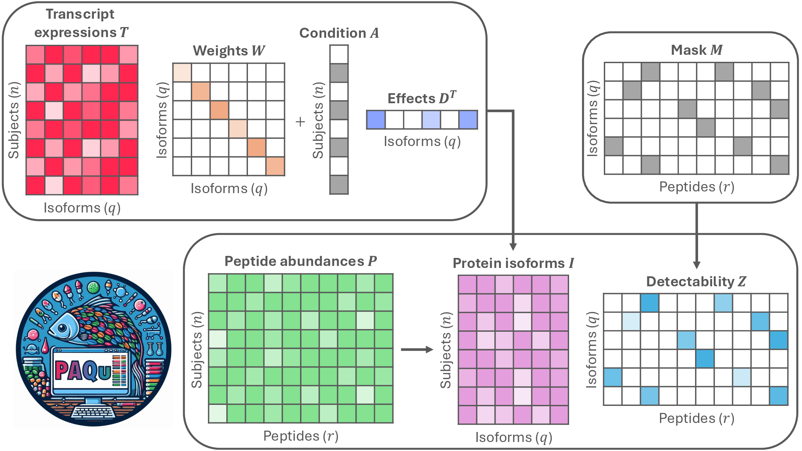

A Bayesian supervised factor analysis method integrating transcriptomic and proteomic data for accurate, uncertainty-aware protein isoform quantification.
aDept. of Statistics & Data Science, Carnegie Mellon University · bL'EMbeDS, Sant'Anna School of Advanced Studies · cDept. of Psychiatry, University of Pittsburgh · dDept. of Statistics, University of Pittsburgh · eA2IDEA · fCenter for Neuroscience, University of Pittsburgh · gDept. of Computational Biology, Carnegie Mellon University · hBiomedical Mass Spectrometry Center, University of Pittsburgh
A single gene can encode multiple versions of a protein, dubbed isoforms, with varying functionality. Cellular control of isoform abundances is critical for multiple aspects of biology and is only partially regulated by transcript levels. While long-read sequencing facilitates transcript quantification, quantifying the resulting protein isoforms on a large scale is a major challenge, complicating biological interpretation of transcript alterations. Standard “bottom-up” mass spectrometry can assess only short portions of isoforms called peptides, and these peptides often map onto more than one isoform. We introduce PAQu, a novel Bayesian method that leverages multiomic information from the peptidome and transcriptome to provide accurate estimates of isoform abundance even when peptide mapping is ambiguous. PAQu offers several advantages over existing methods in a unified framework: it provides uncertainty quantification, integrates multiomic information for improved accuracy, and enables a rigorous framework for hypothesis testing. Extensive simulations show that PAQu consistently outperforms competing methods in detecting differentially expressed protein isoforms and estimating their abundances. We apply PAQu to investigate differences in isoform abundance between people with schizophrenia and control subjects, confirming for the first time at the protein level that C4A — but not C4B — isoform abundance is elevated in schizophrenia.
PAQu is a Bayesian supervised factor analysis method that models protein isoform abundances as latent factors. It learns two key mappings simultaneously: from transcript expression levels to protein isoform abundances, and from protein isoforms to peptide abundances. A binary condition vector (e.g., diagnosis) is incorporated to enable differential abundance analysis.

Fig. 1 — Summary of the PAQu model. The model takes as input a transcript expression matrix T, a condition binary vector A, a detectability mask matrix M, and a peptide abundance matrix P. Outputs include the transcript-to-isoform conversion weights W, the condition effects on isoform abundances D, and the estimated peptide detectability scores Z.
If you use PAQu in your research, please cite:
@article{testa2026paqu,
title = {Estimating protein isoform abundances with {PAQu}},
author = {Testa, Lorenzo and Klei, Lambertus and Rengle, Alesia
and Yocum, Anastasia and Lewis, David A. and Devlin, Bernie
and Roeder, Kathryn and MacDonald, Matthew L.},
journal = {Proceedings of the National Academy of Sciences},
volume = {123},
number = {38},
pages = {e2614319123},
year = {2026},
doi = {10.1073/pnas.2614319123},
url = {https://www.pnas.org/doi/10.1073/pnas.2614319123}
}